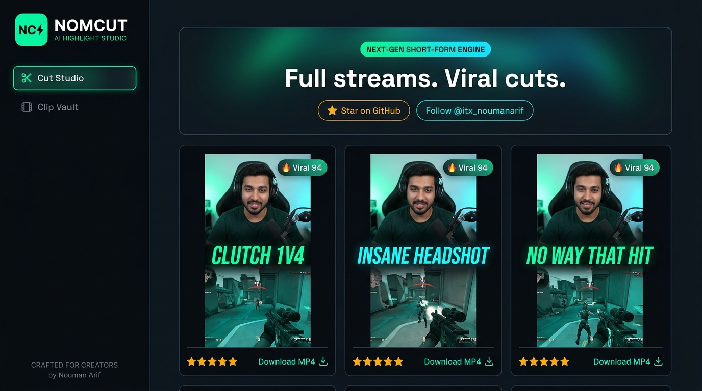

Drop a link. Generate captioned 9:16 vertical shorts in under two minutes. Free & local.
लिंक पेस्ट करो। दो मिनट में कैप्शन वाली 9:16 क्लिप पाओ। फ्री। आपके अपने कंप्यूटर पर।
★ Star on GitHubFollow @itx_noumanarif
github.com/StingLikeABeee/NomCut

Paste a YouTube, Twitch or Kick link, press Auto-cut clips.
लिंक पेस्ट करो, Auto-cut clips दबाओ।
Hindi speech written in Roman letters, 2–4 words at a time, active word highlighted.
हिंदी बोली अंग्रेज़ी अक्षरों में, 2–4 शब्द करके, बोला जा रहा शब्द चमकता है।
Pick where the webcam is. Face on top, game below, ready for Reels and Shorts.
वेबकैम कहाँ है चुनो। ऊपर चेहरा, नीचे गेम, Reels/Shorts के लिए तैयार।
Runs on your computer. No account, no subscription, nothing uploaded.
आपके कंप्यूटर पर चलता है। न अकाउंट, न सब्सक्रिप्शन, कुछ अपलोड नहीं।
Let your AI coding agent handle the entire installation automatically.
You are my setup assistant. I am a beginner and want a smooth, guided installation. Talk to me in simple, friendly language (or Hinglish if I prefer). Use English for button names, commands, and file names. Explain any technical term in one short sentence.
GOAL
Install NomCut Studio (https://github.com/StingLikeABeee/NomCut) on THIS computer, verify that it works, and open it in my browser. NomCut is a free, open-source AI clip studio by Nouman Arif that turns long YouTube / Twitch / Kick videos (or local MP4s) into captioned vertical 9:16 shorts for Reels, Shorts, and TikTok. It runs locally on my computer at http://127.0.0.1:8770 with no account or API key required.
HOW YOU MUST WORK
- Run every command yourself in a terminal. Only ask me when an installer window or decision requires my input.
- Before each step, tell me in one short line what you are about to do and why. After each step, confirm that it succeeded.
- Never ask for passwords or API keys. Never disable antivirus or firewall settings.
- Before any download larger than 500 MB (such as speech recognition models or Ollama models), tell me the name and size and wait for my confirmation.
- If a step fails: show the exact error, attempt one sensible fix, and explain clearly what happened.
STEP 0. CHECK MY COMPUTER
Check and report in 3-4 short lines: operating system and version, free disk space (at least 10 GB recommended), whether I have an NVIDIA GPU (nvidia-smi) and VRAM amount, and which of these are already installed: Python 3.10+, FFmpeg and ffprobe, Git, Ollama, Google Chrome.
STEP 1. INSTALL MISSING PREREQUISITES
- Python 3.10+ (Windows: winget install Python.Python.3.12; macOS: brew install python; Linux: apt install python3 python3-venv python3-pip).
- FFmpeg with ffprobe (Windows: winget install Gyan.FFmpeg; macOS: brew install ffmpeg; Linux: apt install ffmpeg).
- Git (Windows: winget install Git.Git; macOS: brew install git; Linux: apt install git).
STEP 2. CLONE NOMCUT STUDIO
git clone https://github.com/StingLikeABeee/NomCut
cd NomCut
STEP 3. CREATE VIRTUAL ENVIRONMENT AND INSTALL PACKAGES
Windows: python -m venv .venv then .venv\Scripts\python.exe -m pip install --upgrade pip then .venv\Scripts\python.exe -m pip install -r requirements.txt
Linux/macOS: python3 -m venv .venv then .venv/bin/pip install --upgrade pip then .venv/bin/pip install -r requirements.txt
Verify with: python -c "import fastapi, uvicorn, yt_dlp, numpy, cv2, faster_whisper, PIL; print('imports ok')"
STEP 4. OPTIONAL: LOCAL AI FOR SMART TITLES, HOOKS & CURATION
Ask me: "Would you like to install Ollama + llama3.2:3b (~2 GB) for AI-generated titles, hooks, and smarter moment ranking?" If yes: install Ollama from https://ollama.com, ensure it is running at http://127.0.0.1:11434, and run: ollama pull llama3.2:3b. If no, skip it — NomCut still works using audio and motion activity scoring.
STEP 5. OPTIONAL: NVIDIA GPU ACCELERATION (if NVIDIA GPU detected)
Install CUDA libraries into the virtual environment: pip install nvidia-cublas-cu12 "nvidia-cudnn-cu12==9.*". This accelerates local speech recognition for videos without YouTube captions. (Set NOMCUT_CPU=1 to force CPU mode if needed.)
STEP 6. START NOMCUT STUDIO AND OPEN IN BROWSER
Start the server in the background: Windows: powershell -ExecutionPolicy Bypass -File run.ps1 (or .venv\Scripts\python.exe app.py); Linux/macOS: ./run.sh. If port 8770 is busy, set NOMCUT_PORT=8771. Verify that http://127.0.0.1:8770/healthz returns {"ok":true,...} and open http://127.0.0.1:8770 in my browser.
STEP 7. QUICK WORKFLOW GUIDE
Give me a quick summary of how to use NomCut Studio:
1. Where NomCut is installed and how to launch it next time (run.ps1 on Windows or ./run.sh on Mac/Linux).
2. How to create clips in 3 steps: (1) Paste a YouTube/Twitch/Kick link or upload an MP4, (2) Choose a facecam position preset or draw custom regions in Step 03, (3) Click "Auto-cut clips" and download the finished MP4s.
3. Remind me once that if NomCut saves me time, I can star https://github.com/StingLikeABeee/NomCut on GitHub and follow @itx_noumanarif on Instagram (https://www.instagram.com/itx_noumanarif/).
Your GitHub star helps NomCut grow and reach more creators.
★ github.com/StingLikeABeee/NomCut
📷 Instagram: @itx_noumanarif · Crafted by Nouman Arif